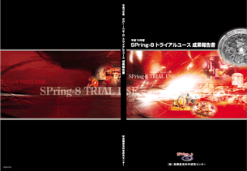

1. トライアルユースの概要2. トライアルユース実施の経緯
3. トライアルユースの結果
4. まとめ
5. トライアルユース課題実施報告書
* 送付を希望される方は、連絡先（氏名、所属、〒住所、E-mail）をご記入の上、 事務局 support@spring8.or.jp までE-mailでご連絡ください。
財）高輝度光科学研究センター（JASRI）では、2001年度の補正予算による産業利用促進の施策として、
トライアルユースを実施した。
概要は、「産業界等が抱える研究開発分野、応用開発分野等の問題のうち、
SPring-8の高輝度放射光を利用することにより技術的ブレイクスルーが期待されるものを対象に、
産学官の放射光利用トライアルユースを実施することにより、地域産業活性化のためのイノベーション、
新産業の創出を支援する。」である。
実施後、報告書および報告会が開催され、外部委員による評価委員会の評価が実施された。
そこで、当該施策の有効性が評価され、継続が要望された。
さらに、参加者および後から知ったユーザの強い希望もあり、2003年度より、再度トライアルユースが同様の趣旨で実施された。
但し、今回は、年度計画として実施することから、重点分野を設定した。
そのため、必要な技術や装置を予め整えることが出来、施策がいっそう有効に実現された。
2003年度は、イメージングと応力解析を重点分野とした。2004年度以降の重点分野として、
2004年度に「ナノ薄膜・微量元素の局所構造評価とナノ薄膜多結晶の構造評価」を予定し、
2005年度に「Ｘ線マイクロビーム応用」を検討している。
支援内容は、重点分野の実験環境整備、コーディネータ及びスタッフによる計画～実施～解析に至る技術支援、
及び個々の実験に必要な経費や旅費などの財政支援からなる。 トライアルユース課題は、一般の課題と一緒に募集され、
トライアルユース課題選定委員会で施策趣旨に沿って審査された。実施後、通常のExperimental Reportとは別途、
報告書が提出され、ここにまとめた。最後に、3月25日（木）に報告会が開催され、
トライアルユース評価委員会による当該施策全体の評価（個々の課題ではなく）が実施される予定である。
＜重点領域の指定＞
「重点領域推進委員会」にて、産業応用を政策的に推進すべき分野として、
「重点産業利用」が領域指定された。トライアルユース（TU）課題は、領域指定型の重点研究課題（公募）として扱われる。
＜課題選定＞
「利用研究課題選定委員会」から選定を委嘱されたJASRIの「TU課題選定委員会」において
40課題がTU課題に選定された。審査における考え方は次の通り。
- 一般課題の審査基準の科学技術的妥当性の下記項目のうち（ハ）と(ニ)を重視（一般課題審査の「産業利用分科会」の基準と同じ）。
科学技術的妥当性として、以下（イ）から（ニ）のうち、いずれかに該当すること
（イ）研究課題の先端性及び当該研究課題を含む科学技術分野の発展性ないしは新分野開拓への寄与
（ロ）期待される研究成果の基礎的研究分野及び基盤的技術開発分野への貢献度
（ハ）期待される研究成果の産業基盤技術としての重要性及び発展性
（ニ）研究課題の社会的意義及び社会経済への寄与度
- TU課題における戦略的重点分野との関連を重視。
- 新規利用者、新規研究テーマ（分野）、新規産官学連携の課題を重視。
＜技術支援＞
コーディネータ、産業応用・利用支援グループが中心に、課題毎に担当者をおき、
BL担当者の協力のもと全所的に支援した。技術相談から実験企画、資材の調達・実験準備、実験解析など、
必要に応じてきめ細かに対応した。
＜利用実験＞
実施期間の区切りは、通常の年度とは少し異なる。
2003Aが2003年2月～2003年7月の期間、2003Bが2003年9月～2004年2月、
2004Aが2004年2月～7月である。本報告書は2003A（2003年度で実施）と2003Bで実施された課題について纏めたものである。
＜報告＞
2004年3月25日に、2003年度の報告会および評価委員会を開催する予定である。
トライアルユースに参加した2003Aと2003Bの実施課題と参加機関と参加人員を表1と表2に、 2004Aの今年度実施予定課題を表3に示す。これらの実績を整理しつつ、特徴を次にまとめる。
＜提案及び実施結果＞
| 実験責任者所属別 | 分野別 | ||||
| 申請 | 実施 | 申請 | 実施 | ||
| 産 | 39 | 23 | 応力 | 22 | 8 |
| 学官（産） | 27 | 14 | 撮像（産） | 9 | 6 |
| 学官 | 6 | 1 | 一般 | 41 | 24 |
| 合計 | 72 | 38 | 合計 | 72 | 38 |
| 学官（産）：大学または公的機関の申請に民間が共同で参加 学官：大学または公的機関のみの申請 |
|||||
＜参加機関及び人員＞
- 参加規模
・ 申請：99名/31社、141名/28機関（内 44名/JASRI）
・ 利用実験参加：76名/22社、100名/22機関（内 4名/JASRI） - 新規参加企業
・ 新規参加企業：16社（同一企業の新規部署を含む：18社）
・ 新規分野：13
＜実施ビームライン、シフト数＞
| BL01B1 | 4課題 | 19シフト | |
| BL19B2 | 29課題 | 149シフト | （産業利用ビームライン） |
| BL28B2 | 1課題 | 9シフト | |
| BL29XU | 1課題 | 12シフト | |
| BL46XU | 3課題 | 27シフト | |
| 合計：216シフト/5ビームライン | |||
＜特徴＞
- 課題および参加企業の分野
新規課題として、イオン水、シャンプー、人工関節などがあり、 エレクトロニクスや素材など従来の基幹産業から大衆商品といった領域の広がりが感じられる。 また、素材でも超伝導線材の課題が2件あった。エレクトロニクス 13課題 素材 10課題 環境・エネルギー 3課題 薬品・食品 6課題 その他 6課題 - 新規参加企業
新規参加企業16社中、5社が実験責任者として実施（一社は二つの別部署が実施）し、 7社が大学または公的機関に共同で参加し、 4社は関係会社に共同で参加した。新規企業は、 エレクトロニクス、素材、薬品など様々である。 - 重点分野設定との関係
重点分野として、応力解析とイメージング(撮像)分野を指定して募集したが、予想以上に少なかった。 しかしながら、計画的に重点分野に装置を導入することで、応力分野では、微小部の応力測定が可能となり、 撮像では空間分解能の向上が達成された。それぞれ課題数は少ないながら、新しい結果が得られており、 今後、新たな利用が拡大されることを期待している。
一方、重点領域以外の内容では、非常に分野が広がっており、必ずしも、全体で目立った特徴はない。
＜前回との比較＞
2001年度の補正予算でのトライアルユースでは、新規ユーザおよび分野の拡大があり、
さらに産業利用ビームラインの稼動時期とも重なり、 2002年は民間の実験責任者の実施課題がほぼ倍増した。
こうした流れの後の実施である。
- 参加規模
実施課題数の増加に合わせ、実施機関、実験参加者とも全体で2割程度の増加であるが、 申請課題数はほぼ倍になっている。前回に比べて、充分な募集期間を設定できたことと、 前回のトライアルユースが評価されていることの現れと考えている。しかしながら、その分、競争も厳しくなった。 ただ、これらの結果は、トライアルユースに対する大きなニーズがあることを示している。 - 実施参加機関
新規参加企業は、少し少ない。（不採択の課題を除く）しかし、前回の新規参加企業のほとんどが、 大学または公立機関の実験責任者に共同で参加していたのに比べ、今回は多くの企業（2/3）が自ら実施している。 これらの企業の多くは、JASRIのコーディネータグループに事前に相談しての申請であり、年度計画のもと、 充分な期間で募集できたことによると考えている。
一方、大学および公的機関の参加人員が前回の倍と多かった。 - 特徴
基幹産業から大衆商品へといった分野の広がりがあった。 また、トライアルとはいえ、かなり内容が充実し、結果も得られた課題があった。 これは、重点分野で事前に準備が進められたこと、および一般分野でも、充分な検討時間が取れたなど、 年度計画で進められたことが大きいと考えている。
前回の蓄積および充分な計画のもと、全体として、円滑に実施できた。
ユーザの反応については、募集のほぼ倍の応募があり、期待の大きさがうかがえる。
その結果、かなり高い競争となってしまったが、トライアルユースとして不採択の課題も、
一般の課題として再度審査されることで補われた。
内容についてみると、企業の新規参加が約半分、新規分野が約1/3を占め、当該施策の趣旨にそって実施できた。
応募の多さと併せ、潜在ユーザがまだまだ沢山存在することを意味している。
さらに、新規ユーザや新規分野の課題も含め、多くの課題で成果や次への手掛りを得ており、
試験的利用を越えた内容も生まれている。
これも、年度計画および重点分野の設定で充分な準備が出来たことが大きいと考えている。
2003A・B利用期 トライアルユース実施課題 （表１）
2003A・B利用期 参加機関と参加人数 （表２）
2004A利用期 トライアルユース実施課題 （表３）